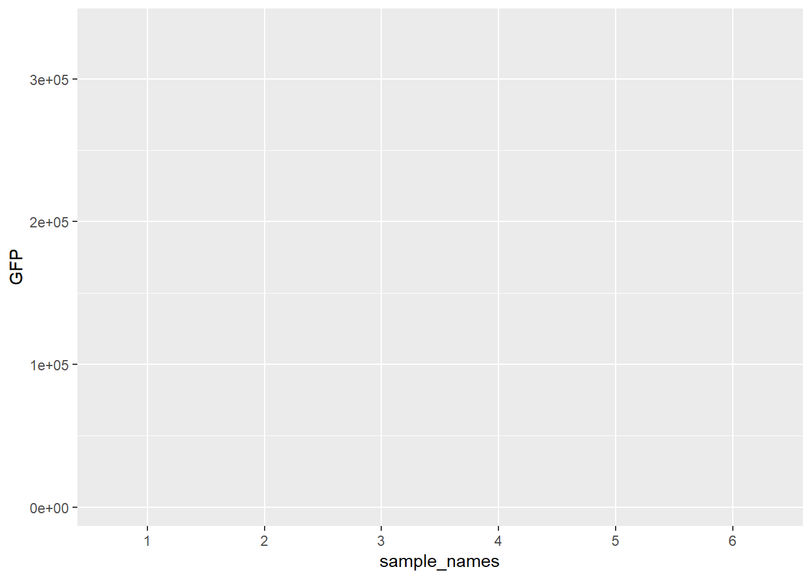
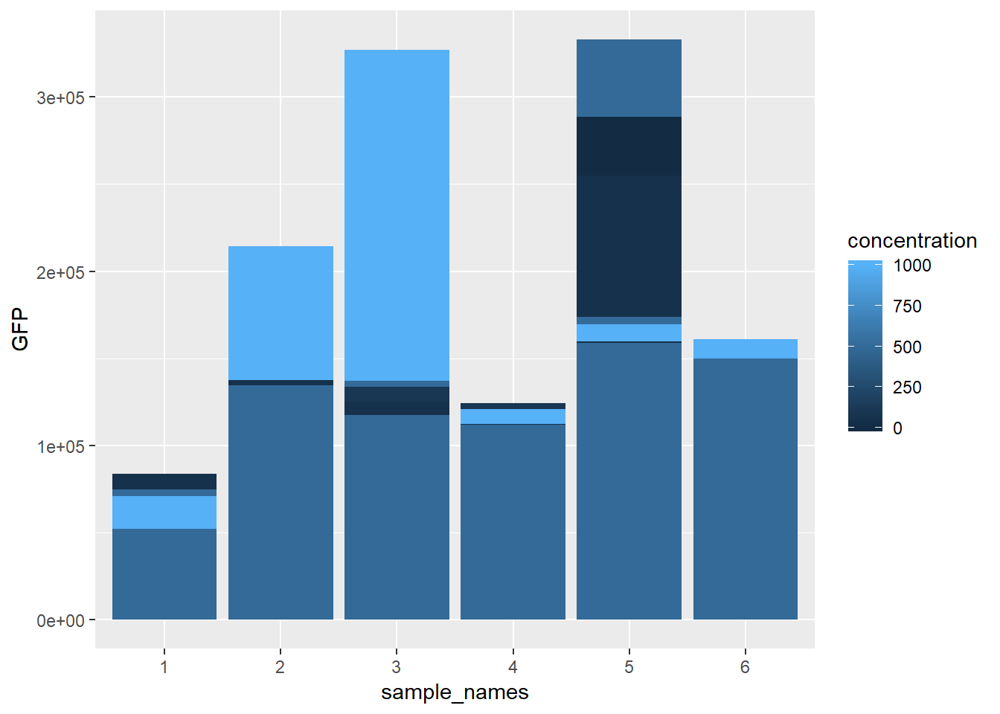
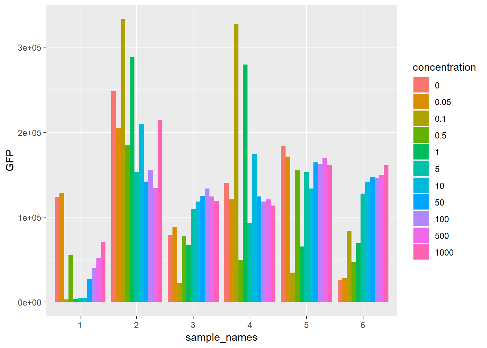
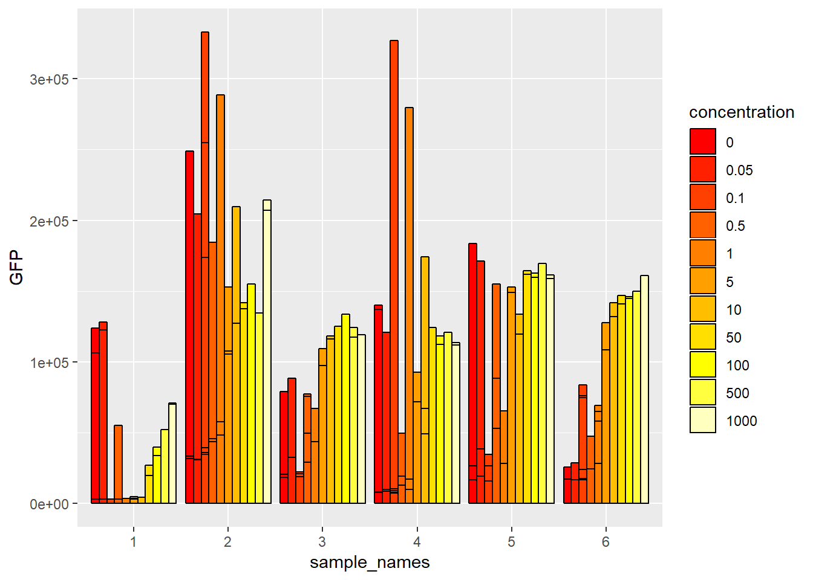

7 Lecture 06 - Multiple plate reader / ggplot
실습용 엑셀파을 먼저 download 하세요
design excel file 2
data excel file 1
data excel file 2
data excel file 3
data excel file 4
R function for plate read
강의 노트
Lecture note
이번 시간에는 지난시간에 이어서 multiple plate reader에 의해서 측정되고 엑셀에 저장된 데이터를 읽어오는 함수를 마무리하고 해당 함수를 사용하여 여러 파일들을 읽어오는 실습을 하겠습니다. 후반부에서는 읽어들인 데이터를 ggplot 패키지를 사용하여 간단한 barplot을 그려보는 것으로 강의는 마무리 하겠습니다.
강의시간에 말씀 드렸지만 오늘 만드는 함수대한 세부적인 내용을 모두 이해하실 필요는 없습니다. 다만 지금 만들고있는 함수를 왜 만들고 어떻게 사용하는지를 아는 것은 중요합니다. 프로그래밍의 대부분은 함수와 로직을 만드는데 있고 R을 이용한 데이터 분석 또한 함수를 사용하면서 대부분의 시간을 보내기 때문에 함수를 왜 만들고 사용하는지를 이해하는 것은 중요합니다.
7.1 multiple_plate_excel_reader 함수 만들기
먼저 처음 만드는 함수는 다음과 같이 만들어지고 쓰일 것 입니다. 함수의 이름은 multiple_plate_excel_reader 이고 입력 파라메터의 갯수는 두 개입니다. design file과 data file 이름들 입니다.
multiple_plate_excel_reader <- function(design_file_name, data_file_name){
###
### code
###
}
design_file_name <- "exp_design.xlsx"
data_file_name <- "Rprog04-fl.xls"
mydata <- multiple_plate_excel_read(design_file_name, data_file_name)이제 함수를 만들기 위해 read_plate.R 이라는 파일을 만들고 다음처럼 코드를 작성합니다. 간단한 기능을 하는 짧은 라인의 함수의 경우 바로 함수를 작성해도 괜찮습니다. 그러나 지금과 같이 비교적 긴 라인의 함수는 파라메터로 입력되는 값들을 미리 정의해 놓고 함수 선언문 이후의 코드들을 하나하나 실행하면서 작동을 확인 합니다. 그 후 마지막에 함수 선언문을 작성하고 블럭으로 묶어놓는 방식으로 함수를 작성합니다. 아래의 경우는 함수가 선언되는 부분을 주석으로 처리해 두었습니다. require 명령은 library와 같은 기능입니다. 그리고 read_excel 함수를 사용해서 엑셀 파일들을 불러오는 부분입니다. 최근에는 tibble 형태의 오브젝트를 많이 쓰지만 여기서는 기존 data.frame 오브젝트로 읽어오기 위해서 앞에 as.data.frame을 붙였습니다.
design_file_name <- "exp_design.xlsx"
data_file_name <- "Rprog04-fl.xls"
#multiple_plate_excel_reader <- function(design_file_name, data_file_name){
require(readxl)
## read excel files
mydesign <- as.data.frame(read_excel(design_file_name, sheet=1, range="A1:L8", skip = 0, col_names=F))
mydata <- as.data.frame(read_excel(data_file_name, sheet=1))
#...code 이후 코드들은 모두 지난 시간 강의를 보시면 자세한 설명이 나와 있으니 생략하도록 하겠습니다. 아래는 완성된 함수의 전체 코드입니다. 마지막 부분에 rownames(t_tmpcond2) <- NULL 코드가 지난번과 다르지만 이 부분은 row이름이 바뀌는 것을 막기 위해서 넣어주었습니다.
multiple_plate_excel_reader <- function(design_file_name, data_file_name){
require(readxl)
## read excel files
mydesign <- as.data.frame(read_excel(design_file_name, sheet=1,
range="A1:L8", skip = 0, col_names=F))
mydata <- as.data.frame(read_excel(data_file_name, sheet=1))
## build a position matrix
pos1 <- rep(LETTERS[1:8], time=12)
pos2 <- rep(sprintf("%02d", 1:12), each=8)
well_position_labels <- paste(pos1, pos2, sep="")
well_position_matrix <- matrix(well_position_labels, nrow=8, ncol=12)
## extract positions from position matrix by using design matrix indexes
colnames(mydesign) <- as.character(1:12)
colnames(well_position_matrix) <- as.character(1:12)
bound_matrix <- rbind(mydesign, well_position_matrix)
tmpv <- lapply(bound_matrix, extract_values_from_other_matrix)
well_names <- unlist(tmpv)
## extract conditions from design matrix by design matrix indexes
tmpv <- lapply(mydesign, extract_values_from_own_matrix)
well_conditions <- unlist(tmpv)
## build well_info matrix
well_info <- data.frame(well_names, well_conditions, stringsAsFactors = F)
## subset of the data filtered by the wells that we are interested in
tmpidx <- match(mydata$Well, well_info$well_names)
tmp_mydata_subset <- subset(mydata, !is.na(tmpidx))
## extract OD, GFP, etc if there is any
sel_column <- c(3, seq(6, ncol(tmp_mydata_subset), by=2))
mydata_subset <- tmp_mydata_subset[,sel_column]
## to make the condition column more readable
tmp_final_data <- merge(well_info, mydata_subset, by.x="well_names", by.y="Well")
tmpcond <- sapply(tmp_final_data$well_conditions, function(x){
tmp <- unlist(strsplit(x, ";"))
names(tmp) <- c("sample_names", "replication", "concentration")
return(tmp)
}
)
## make final data matrix
t_tmpcond <- t(tmpcond)
t_tmpcond2 <- cbind(t_tmpcond, well_conditions=rownames(t_tmpcond))
rownames(t_tmpcond2) <- NULL
t_tmpcond2 <- data.frame(t_tmpcond2)
t_tmpcond2$concentration <- as.numeric(as.character(t_tmpcond2$concentration))
final_data <- merge(tmp_final_data, t_tmpcond2, by="well_conditions")
final_data <- final_data[,-1]
return(final_data)
}이제 함수를 사용해 보겠습니다. 현재 실행중인 working 디렉토리 안에 "exp_design.xlsx" "Rprog04-fl.xls" 이 두 파일을 넣고 아래와 같은 코드를 실행 합니다. 여기서 처음보는 명령이 source 입니다. 이 명령은 해당 R 파일의 내용을 실행시키는 것과 같습니다. 즉 방금 만든 함수를 read_plate.R 파일에 저장해 두었고 해당 함수를 사용하기 위해서 전체 함수를 ctrl+enter 로 실행시키지 않고 source("read_plate.R") 한 줄 실행하는 것 만으로도 해당 함수를 사용할 수 있습니다.
source("read_plate.R")
design_file_name <- "exp_design.xlsx"
data_file_name <- "Rprog04-fl.xls"
mydata <- multiple_plate_excel_reader(design_file_name, data_file_name)
head(mydata)## well_names 595nm_kk (A) EGFP_sulim (Counts) sample_names replication
## 1 B01 0.7012086 67809 1 1
## 2 B02 0.7518509 60025 1 1
## 3 B03 0.7232866 102745 1 1
## 4 B04 0.7440926 99979 1 1
## 5 C01 0.8026616 42654 1 2
## 6 C02 0.7750938 33957 1 2
## concentration
## 1 0
## 2 10
## 3 100
## 4 1000
## 5 0
## 6 107.2 multiple_plate_excel_reader2 함수 업데이트
여기까지만 해도 어느 정도는 대부분의 실험 데이터를 읽어올 수 있는 함수로 사용될 수 있습니다. 그러나 좀 더 편리한 함수를 위해서 업그레이드를 해 보겠습니다. 대략 세 가지의 문제점이 있으며 그 첫번째로 실험 컨디션을 3개만 사용하고 있는 부분입니다. drug 농도 앞에 drug 이름을 넣는 경우를 생각해서 함수를 업데이트 하겠습니다. 또한 design 파일을 매 실험마다 새로 만들지 않고 sheet를 활용하는 방법과 마지막으로 column 이름에 595가 들어갈 경우 OD로 GFP가 들어가면 GFP로 컬럼 이름을 자동으로 바뀌게 하는 코드를 작성해 보겠습니다. 컬럼 이름을 바꾸는 이유는 앞서 결과에 보이는 것 처럼 컬럼 이름이 595nm_kk (A) 이런식으로 주어질 경우 indexing 하기 힘들기 때문입니다.
595 가 문자열에 있는지를 판단하는 코드를 작성하기 위해서 문자열 다루는 실습을 해 보겠습니다. 문자열은 추후 유전자서열에 대한 조작을 할 때 많이 쓰이는 함수의 모음으로 다음과 같습니다. substr은 일부 문자열 뽑기, nchar는 문자의 갯수, strsplit는 split 문자를 기준으로 문자열 나누기, sub은 문자열 바꾸기 등 입니다. 각각 실행해 보시고 자세한 설명은 help 페이지를 참고 바랍니다.
s <- "This is the sixth lecture of R programming"
substr(s, 0, 11)
nchar(s)
toupper(s)
tolower(s)
strsplit(s, split=" ")
paste(s, " at UST", sep="")
sub("This", "That", s)문자열 다루기에서 흔히 쓰이는 방법 중 하나는 정규식 입니다. 정규식은 특정 문자열의 집합을 표현하는데 사용되는 언어라고 할 수 있으며 대부분의 프로그래밍 언어나 편집기에서 지원하고 있습니다. 아래의 경우 . 은 모든 문자를 나타내고 + 는 바로 앞 문자가 하나 또는 그 이상을 나타내는 기호이므로 .+는 모든 연속되는 문자열을 나타낸다고 할 수 있습니다. 따라서 sub("This is.+of ", "", s) 는 This is 부터 of 까지의 문자열을 모두 가리키는 것이고 이를 "" 지우는 명령 입니다. grep 은 s 에 “This” 문자열이 있는지를 검사해서 있으며 1 없으면 0을 반환하고 regexpr의 경우는 있을 경우 시작위치와 끝위치를 리턴하는 함수 입니다.
## regular expression
sub("This is.+of ", "", s)
grep("This", s)
regexpr("This", s)이제 함수를 업데이트 해 보겠습니다. 마지막 부분의 final_data를 만드는 부분에서 컬럼 이름들을 뽑고 grep을 사용하여 특정 문자열을 (595나 GFP 같은..) 찾은 뒤 해당 문자열이 있는 값을 원하는 값으로 (OD나 ```GFP````)로 바꿔줍니다. 이 후 컬럼 이름을 다시 바뀐 이름으로 저장하면 되겠습니다.
## .... code
## column names
cnames <- colnames(final_data)
idx <- grep("595", cnames)
if(length(idx)>0){
cnames[idx] <- "OD"
}
idx <- grep("GFP", cnames)
if(length(idx)>0){
cnames[idx] <- "GFP"
}
idx <- grep("RFP", cnames)
if(length(idx)>0){
cnames[idx] <- "RFP"
}
colnames(final_data) <- cnames두 번째 조건을 하나 더 추가하기 위한 코드를 만들어 봅니다. 함수에서 실험 조건을 parsing 하는 코드는 아래와 같습니다. tmp_final_data$well_conditions 에 1;1;100 형식의 조건을 1;1;phenol;100 형식으로 바꿀경우 sapply 에서 사용한 function에서 names(tmp) <- c("sample_names", "replication", "concentration") 부분을 names(tmp) <- c("sample_names", "replication", "treatment", "concentration") 으로만 바꾸어 주면 되겠습니다.
## to make the condition column more readable
tmp_final_data <- merge(well_info, mydata_subset, by.x="well_names", by.y="Well")
tmpcond <- sapply(tmp_final_data$well_conditions, function(x){
tmp <- unlist(strsplit(x, ";"))
names(tmp) <- c("sample_names", "replication", "concentration")
return(tmp)
}
)본 강의에서는 아래처럼 컨디션 문자열을 parsing 하는 함수를 따로 떼어서 만들어서 사용하겠습니다.
split_condition <- function(x){
tmp <- unlist(strsplit(x, ";"))
names(tmp) <- c("sample_names", "replication", "drugname", "concentration")
return(tmp)
}
multiple_plate_excel_reader2 <- function(design_file_name, data_file_name){
###
### ...
###
tmpcond <- sapply(tmp_final_data$well_conditions, split_condition)
###
### ...
###
}마지막으로 design excel 파일의 sheet 를 지정하는 코드는 다음과 같이 sheet4design 이라는 파라메터를 추가하고 그 아래 read_excel 함수에서 이 값을 사용하여 sheet를 지정하는 것으로 바꿀 수 있습니다. 업데이트된 파일은 여기 에서 보실 수 있습니다.
multiple_plate_excel_reader2 <- function(design_file_name, data_file_name, sheet4design){
require(readxl)
## read excel files
mydesign <- as.data.frame(read_excel(design_file_name, sheet=sheet4design,
range="A1:L8", skip = 0, col_names=F))
mydata <- as.data.frame(read_excel(data_file_name, sheet=1))
## ...
## ...7.3 Read data
이제 만들어진 함수를 이용하여 몇 개 파일의 데이터를 읽어보도록 하겠습니다. 총 4개의 실험 파일이 있으며 각 실험 데이터에 대한 조건 정보는 exp_design2.xlsx 파일의 네 개의 sheet에 명시되어 있습니다. 간단히 6개의 세포와 1종류의 약품처리 그리고 11개의 농도 조건과 각 샘플별 반복이 4개 입니다. 아래 4개 파일은 모두 동일한 반복 데이터라고 볼 수 있겠습니다. 이제 우리가 만든 함수의 파라메터에 맞게 값을 입력하고 읽어들이면 mydata1 ~ mydata4 까지 우리가 원하는 포맷의 데이터가 들어가게 되고 rbind 함수로 각각의 데이터를 하나의 오브젝트 (data.frame)로 저장할 있습니다. 함수를 만들지 않았을 경우 각 엑셀 파일마다 우리가 원하는 포맷으로 만들어 주기위한 복잡하고 반복적인 코드를 실행해야 하는 것과 비교하면 훨씬 간단한 작업인 것이고 이러한 재사용성이 함수를 만드는 이유 중 하나가 됩니다.
source("read_plate.R")
design_file_name <- "exp_design2.xlsx"
data_file_names <- c("20171012-phenol-1.xls",
"20171012-phenol-2.xls",
"20171227-phenol-1.xls",
"20171227-phenol-2.xls")
mydata1 <- multiple_plate_excel_reader2(design_file_name, data_file_names[1], sheet4design=1)
mydata2 <- multiple_plate_excel_reader2(design_file_name, data_file_names[2], sheet4design=2)
mydata3 <- multiple_plate_excel_reader2(design_file_name, data_file_names[3], sheet4design=3)
mydata4 <- multiple_plate_excel_reader2(design_file_name, data_file_names[4], sheet4design=4)
mydata <- rbind(mydata1, mydata2, mydata3, mydata4)
dim(mydata1)## [1] 68 7dim(mydata)## [1] 304 7head(mydata)## well_names OD GFP sample_names replication drugname
## 1 B11 0.8952574 7947 1 1 phenol
## 2 C11 0.8702875 8227 1 1 phenol
## 3 D11 0.8749599 15117 1 1 phenol
## 4 E11 0.9247382 69073 1 1 phenol
## 5 F11 0.8569116 83805 1 1 phenol
## 6 G11 0.8538494 71393 1 1 phenol
## concentration
## 1 0e+00
## 2 5e-02
## 3 5e-01
## 4 5e+00
## 5 5e+01
## 6 5e+027.4 ggplot 이용 barplot 그리기
데이터 분석에서 데이터를 눈으로 확인하는 것은 중요합니다. 가능하면 raw 데이터를 보면서 크기 비교나 분포를 대략적으로 예측한다면 tool을 사용해서 나오는 결과를 가늠하는 척도가 될 수도 있습니다. 그러나 우리 데이터는 6개의 세포와 11개의 농도 4번의 반복으로 약 308 개의 샘플을 갖는 비교적 큰 데이터 입니다. 이럴 경우 눈으로 확인하는 것은 한계가 있으므로 대부분 그래프나 도표를 그려서 데이터의 분포를 확인하게 됩니다. 농도 포인트가 11개 이므로 각 농도 포인트별로 6개 샘플들의 값의 분포가 어떻게 되어있는지를 나타내는 그림을 그리면 좋을 듯 하므로 ggplot을 이용하여 barplot을 그려보도록 하겠습니다.
ggplot은 수업시간에 말씀 드린바와 같이 문법이 있습니다. 간단히 다음과 같은 순서 입니다. 각 요소들은 레이어로 볼 수 있고 각 레이어는 + 기호로 줄을 바꿔가며 명시해 주면 되겠습니다.
- 데이터 지정 (ggplot)
- 색상, 크기, x축의 값, y축의 값 등 심미적 요소 지정 (aes)
- 점, 선, 면 등 기하학적 요소 지정 (geoms)
- 그릴 통계량 지정 (stats)
- 테마, 스케일 지정
아래 ggplot2를 로딩후 ggplot을 실행할 경우 데이터와 x, y 축만 지정한 상태로 어떤 그래프 (히스토그램인지, 산포도인지 등)를 그릴지 명시되어 있지 않아서 아무것도 그리지 않은 상태의 빈 켄버스만 그려지게 됩니다.
library(ggplot2)
ggplot(data=mydata, aes(x=sample_names, y=GFP))
+ 로 레이어를 추가하면서 geom_bar() 함수로 막대그래프를 그린다고 명시를 하면 되지만 geom_bar의 기본 stat은 count로 mydata의 GFP 즉 y 값은 count 데이터가 아니므로 에러를 보여줍니다.
ggplot(data=mydata, aes(x=sample_names, y=GFP)) +
geom_bar()따라서 stat을 “identity”로 명시하고 그릴 경우 정상적으로 barplot이 그려지게 됩니다.
ggplot(data=mydata, aes(x=sample_names, y=GFP)) +
geom_bar(stat="identity")
위 그림은 반복이나 농도 등을 고려하지 않고 모두 한 위치 (예를 들어 1번 샘플의 반복 및 다른 농도 값들 모두 첫 번째 위치)에 그려지게 됩니다. 따라서 아래와 같이 각 농도를 다른 색으로 채우고 fill=concentration, 위치도 다르게 "position=dodge" 그려줄 수 있습니다.
ggplot(data=mydata, aes(x=sample_names, y=GFP, fill=concentration)) +
geom_bar(stat="identity", position="dodge")
그러나 색은 다른 색으로 보이나 위치는 변경되지 않았습니다. 이는 concentration이라는 변수에 저장된 값들이 numeric 으로 연속형이라 나란히 막대그래프를 위치시킬 수 없기 때문입니다. 이 때는 concentration을 factor 형으로 변환한 후 그리면 됩니다.
mydata2 <- mydata
mydata2$concentration <- as.factor(mydata2$concentration)
ggplot(data=mydata2, aes(x=sample_names, y=GFP, fill=concentration)) +
geom_bar(stat="identity", position="dodge")
이제 샘플별로 농도별로 값을 한 눈에 볼 수 있습니다. 아래처럼 scale_fill_manual(values = heat.colors(11))를 이용해서 bar의 색을 바꾸거나
ggplot(data=mydata2, aes(x=sample_names, y=GFP, fill=concentration)) +
geom_bar(stat="identity", position="dodge") +
scale_fill_manual(values = heat.colors(11))
color="black" 으로 태두리 색상도 바꿀 수 있습니다.
ggplot(data=mydata2, aes(x=sample_names, y=GFP, fill=concentration)) +
geom_bar(stat="identity", position="dodge", color="black") +
scale_fill_manual(values = heat.colors(11))
그런데 위 그림에 보시면 여전히 한 위치에 다른 그래프가 여러개 그려져 있는 것을 확인하실 수 있고 이는 반복 실험 데이터로서 4개의 반복이 같은 위치에 그려지고 있는 것 입니다. 이럴 경우 보통 평균을 구해서 bar를 그리고 4개의 standard deviation이나 standard error를 구한 후 error를 표시히 주면 됩니다. 그런데 현재 mydata의 값들에서 샘플별로 농도별로 묶은 후 각 4개의 값에 대한 평균과 표준편차를 구하는 일은 일반적인 툴의 경우 번거롭고 시간이 걸리는 작업일 수 있습니다. 다음 시간에는 dplyr 패키지를 사용하여 이러한 평균과 분산을 빠르게 구하고 ggplot을 이용해서 barplot의 error bar 를 표현하는 방법을 알아보도록 하겠습니다. 이 외에도 다른 ggplot의 기능을 사용한 여러 그래프를 그리는 실습을 하도록 하겠습니다.